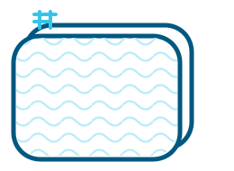

Oval From $3,800
Palm Cove · Cape York · Billabong
Above-ground · Semi-inground · IngroundUp to 20-yr pro-rata warranty (10-yr Billabong)View Oval Pools →

Installed in your backyard in as little as 30 days – without the concrete pool price tag.
Get Your Free Quote NowNo Deposit. No ObligationWe manufacture the pools ourselves, in three shapes and three finishes, so there's a modular pool sized for almost any backyard — and a real price attached to it, not a “from POA.”
Starting prices shown; installation, freight, site preparation, equipment and selected extras may vary. Your quote will confirm the total project cost.
Palm Cove · Cape York · Billabong
Above-ground · Semi-inground · Inground
Palm Cove · Cape York
Above-ground · Semi-inground · Inground
Palm Cove · Cape York · Billabong
Above-ground · Semi-inground · Inground
You've heard it “gets used six times a year.” Not this one. When it's your own backyard, on a hot day, the kids are never out of the water, and that's the whole point.
Between ages 6 and 15 is the window the kids will remember. A pool at home is where those summers happen.
The real want was never a pool. It's everyone outside, together, in the water instead of scrolling.
Modular, not poured. If life changes, it can come out later, no paying thousands to fill in a concrete pit.
Sunk into a deck, you'd never know it's above-ground. Real installs, real backyards, this is the finish that puts the aesthetics worry to bed before you read another word.


We're the only above-ground pool manufacturer that makes and sources our pools in Australia. Most others are made overseas, and when something goes wrong, you're on your own. We're confident in our quality — we back the wall and frame with up to a 20-year pro-rata warranty. Up to 20-yr pro-rata; Billabong carries 10-yr pro-rata. See full terms.
| Model | Warranty |
|---|---|
| Palm Cove | Up to 20-year pro-rata |
| Cape York | Up to 20-year pro-rata |
| Billabong | 10-year pro-rata (Oval & Round only) |
Currently only available for NSW & QLD. If you're in another state, get in touch with your local council or a Private Certifier to get your CDC completed.
The council process, off your plate.We assess your block and what approval it needs
We prepare and lodge the paperwork for you
We keep you posted until it's signed off
Direct-from-factory pricing is why it's affordable without being cheap. No dealer markup, no surprise trips to Bunnings, and finance that doesn't let the bank quietly take thousands.
Finance through Humm, a regulated Australian lender. No hidden fees. We show you exactly what it costs before you commit to anything.
We quote transparently from the start, so the pump, the freight, the extras don't ambush you later. You know the all-in figure before you decide, and $0-interest finance means the bank doesn't get a cent extra.
As the weather warms up, we get busier, and as the only above-ground pool manufacturer making pools locally in Australia, our production times increases.


“Jeff is very professional to deal with. He understands the ins and outs of how to get a pool built in the backyard. Had a wonderful experience working with him, I'll highly recommend him to anyone who wants to build a pool in their backyard.”
★★★★★“Jeff is very professional to deal with. He understands the ins and outs of how to get a pool built in the backyard. Had a wonderful experience working with him, I'll highly recommend him to anyone who wants to build a pool in their backyard.”
★★★★★